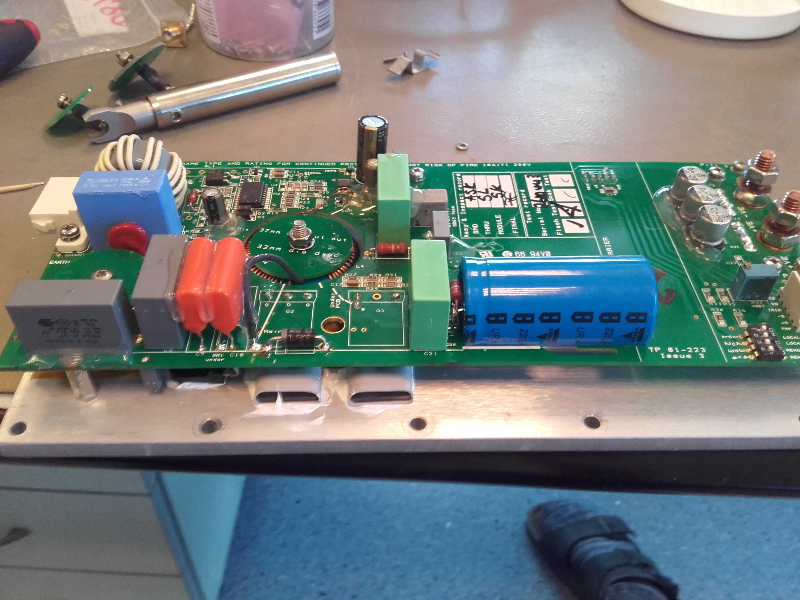
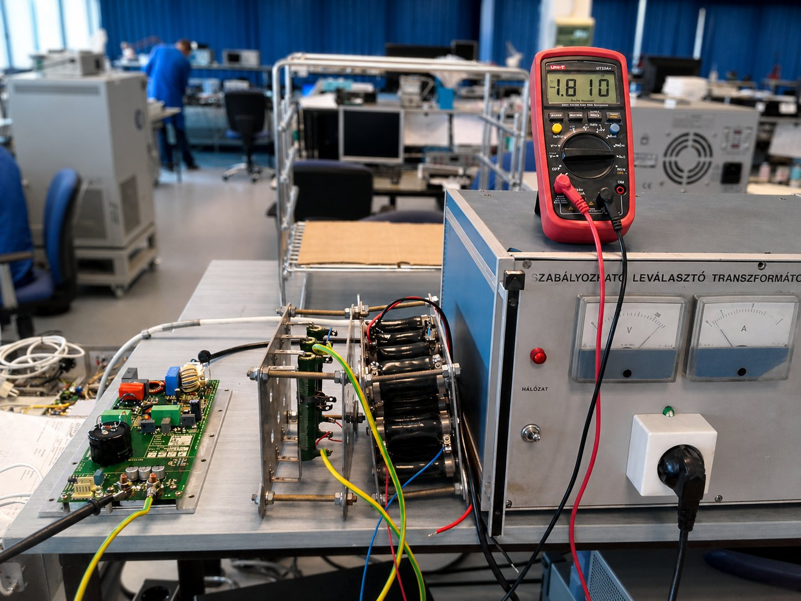
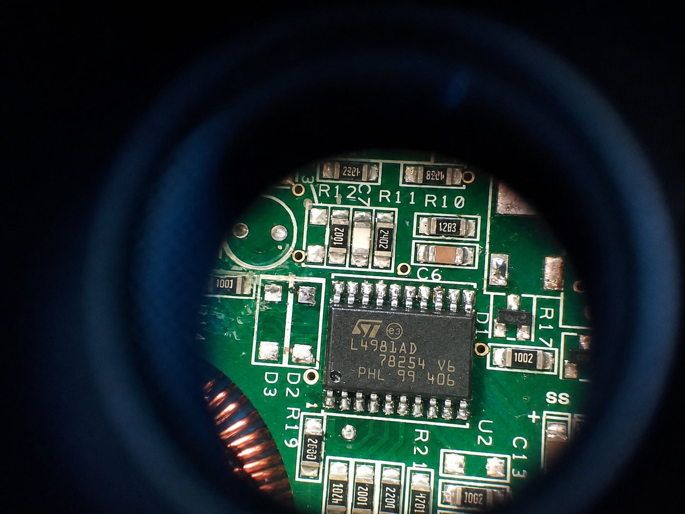

XP Power BCC400PS28 — kapcsolóüzemű tápegység javítása
SMPS javítás · L4981B PFC vezérlő · IC csere · Leválasztó transzformátor · Mérési folyamat
A feladat
Az XP Power BCC400PS28 egy 400 W-os, 28V-os kapcsolóüzemű tápegység —
ipari berendezésekben, orvostechnikai eszközökben és mérőrendszerekben alkalmazzák.
A hibás egység nem indult: a kimeneten nulla volt mérhető, de a primer oldal feszültsége
rendben volt. A diagnosztika a PFC (Power Factor Correction) fokozatra
mutatott — az L4981B típusú PFC vezérlő IC tönkrement.
A javítás egy leválasztó transzformátoros mérőpadon, szisztematikus hibakeresés
és precíz SMD forrasztás kombinációja volt.
Saját fotók

XP Power BCC400PS28 — nyomtatott áramköri lap kinyitva · Látható: PFC induktivitás (piros toroid), bulk kondenzátor (kék), EMI szűrő (bal), főkapcsoló MOSFET-ek · TP.01-223 Issue 3

Mérőpad — szabályozható leválasztó transzformátor · UNI-T UT33A+ multiméter · –1.810 V olvasatnál PFC kimeneti ellenőrzés · Ipari labor

L4981AD IC makrofotó — lupén keresztül · ST Microelectronics · TQFP-32 tok · R10–R12 SMD ellenállások mellette · Látható a forrasztási minőség
XP Power BCC400PS28 — a tápegységről
Típus
BCC400PS28
AC/DC kapcsolóüzemű, 1U rack
Teljesítmény
400 W
Csúcsteljesítmény: 480 W (10 s)
Kimenet
28V DC / 14.3 A
±1% feszültségstabilitás
Bemenet
85–264V AC
Univerzális hálózati bemenet, 47–63 Hz
PFC
Aktív PFC > 0.95
L4981B vezérlő, boost topológia
Hatásfok
~89%
Teljes terhelésen, 230V bemeneten
Hűtés
Kényszerhűtés (ventilátor)
Hőmérséklet-vezérelt fordulatszám
Védelmek
OVP · OCP · OTP · SCP
Túlfeszültség, áram, hőmérséklet, rövidzár
Kapcsolóüzemű tápegység — topológia
BCC400PS28 belső felépítés — blokkvázlat
L4981B — a kicserélt IC részletesen
🔬
Az L4981B (ST Microelectronics) egy aktív PFC vezérlő IC,
amelyet kifejezetten boost topológiájú teljesítménytényező-javító fokozatokhoz terveztek.
Feladata: a hálózati áramfelvételt szinuszos alakúra kényszeríteni, hogy a tápegység
ne terhelje felesleges reaktív teljesítménnyel a hálózatot. Enélkül a kapcsolóüzemű
tápegység erősen torzított, csúcsos áramot venne fel — amit az EMC szabványok tiltanak.
Mi az a PFC és miért kell?▸
A Power Factor Correction (PFC) — teljesítménytényező-javítás — azt oldja meg,
hogy egy kapcsolóüzemű tápegység ne csupán a szinuszos feszültség csúcsainál vegyen fel áramot,
hanem folyamatosan, a feszültséggel szinkronban.
Miért gond a torzított áram? • A hálózati transzformátorok és kábelek feleslegesen melegszenek (reaktív veszteség)
• Az EMC előírások (EN 61000-3-2) korlátozzák a harmonikus áramokat
• Ipari alkalmazásban a teljesítményszámla nő rossz cos(φ) esetén
Az aktív PFC boost fokozat a hálózati egyenirányított feszültséget (kb. 325V csúcs)
egy ~400V-os DC buszra emeli, miközben az áramfelvételt szinuszossá alakítja.
Az L4981B ehhez vezérli a boost MOSFET-et — folyamatosan méri a hálózati feszültséget,
az induktivitás áramát és a kimeneti feszültséget, majd ezek alapján modulálja a kapcsolási ciklust.
L4981B belső felépítése és lábkiosztása▸
Az L4981B egy TQFP-32 tokozású IC, 32 lábbal. Főbb belső blokkjai:
• Sokszorozó (Multiplier) — a hálózati feszültség szinuszos mintájával
megszorozza az áramhiba-jelet, így az áramerősség-referencia követi a feszültség alakját
• Hibaerősítő (Error Amplifier) — a 400V-os DC busz és a referencia
különbségéből vezérlőjelet generál. Külső RC hálózat állítja be a hurokstabilitást.
• PWM komparátor — az áramvisszacsatolást és a fűrészjelet hasonlítja össze,
meghatározva a kapcsolási pillanatot
• Gate driver — a boost MOSFET vezérlőelektródáját hajtja meg
(tipikusan 0.5–1 A csúcsárammal)
• Szinkron generátor — fix vagy szinkronizálható kapcsolási frekvencia
(tipikusan 50–200 kHz tartomány)
• Soft start — bekapcsoláskor fokozatosan emeli a terhelést,
elkerüli az induktivitás telítési tranziensét
• Védelmek: OVP (túlfeszültség), OCP (túláram), undervoltage lockout
Az L4981A és L4981B különbsége: az A változat average current mode,
a B változat peak current mode vezérlésű — utóbbi egyszerűbb külső hálózatot igényel,
de érzékenyebb az induktivitás áramcsúcsaira.
Hogyan azonosítottuk a hibát?▸
A diagnosztika lépései a leválasztó transzformátoros mérőpadon:
1. Vizuális ellenőrzés — felpuffadt kondenzátor? Leégett nyomvonal?
Forrasztási hiba? A BCC400PS28 lapján semmi látható sérülés nem volt.
2. Primer oldal ellenőrzése — a leválasztó transzformátorral fokozatosan
emeltük a bemeneti feszültséget (nem egyszerre 230V!). A primer egyenirányító és
az EMI szűrő rendben volt.
3. PFC busz mérése — normálisan ~400V DC-nek kellene megjelennie
a bulk kondenzátoron. Nulla volt — a PFC fokozat nem indult.
4. L4981B tápfeszültsége — az IC VCC lába (15V) rendben volt.
De az IC gate driver kimenete (GATE láb) nem adott PWM jelet — oszcilloszkóppal mérve
teljesen lapos volt a jel.
5. Statikus mérés — az IC kivételével (in-circuit) mérve a lábak
közötti ellenállások rendellenesek voltak, belső törésre utalva.
Diagnózis: L4981B belső meghibásodás — az IC cserére szorul.
Az IC csere folyamata — SMD forrasztás▸
A TQFP-32 tok SMD forrasztása nem triviális — 32 finom láb, 0.8mm lépésközzel.
Eltávolítás: • Forrasztópáka hőlégfúvóval (hot air rework station) — 320–350°C, közepes légsebesség
• Az IC mind a 4 oldalát egyenletesen melegíteni kell, amíg az ón megolvad
• Csipesszel emeljük ki — nem húzzuk, csak emeljük, különben a pad-ek megsérülnek
Pad tisztítás: • Forrasztócsúccsal és ónszívóval eltávolítjuk a maradék ónt
• Izopropil-alkohollal (IPA) tisztítjuk a fluxust
• Lupéval ellenőrizzük: nincs-e hideg forrasztás, felszakadt pad?
Beültetés: • Az új IC-t fluxtással a pad-ekre helyezzük, pontosan illesztve (pin 1 jelölés!)
• Először a 4 saroklábot rögzítjük, hogy ne csússzon el
• Lábankénti forrasztás vékony ónnal (0.5mm), vagy "drag soldering" technikával
• Végül IPA-s tisztítás, vizuális és elektromos ellenőrzés
Javítási folyamat — lépések
01
Befogadás és tünetek rögzítése — kimenet: 0V, bemeneti biztosíték ép, ventilator nem indul
02
Leválasztó transzformátor beállítása — fokozatosan 0→230V, áramkorlátozással. Biztonságos módszer ismeretlen hibánál.
03
Primer oldal ellenőrzése — EMI szűrő, egyenirányító, bulk kondenzátor (kék, jól látható a fotón). PFC busz: 0V.
04
L4981B diagnosztika — VCC OK (15V), de GATE kimenet lapos (oszcilloszkóp). In-circuit ellenállások rendellenesek.
05
IC azonosítás és alkatrész rendelés — L4981B (nem L4981A!), TQFP-32. Eredeti ST Microelectronics forrásból.
06
Hot-air rework — régi IC eltávolítása, pad tisztítás. Makrofotón jól látható az eredmény (lupéval ellenőrizve).
Első indítás — sikeres! PFC busz: 398V DC, kimenet: 28.1V / terhelés alatt stabil. Multiméter: –1.810A áramfelvétel mérése.
Tapasztalat és tanulságok
A BCC400PS28 javítása megmutatta, hogy egy kapcsolóüzemű tápegység hibakeresése szisztematikus
megközelítést igényel — a véletlenszerű alkatrészcsere helyett mindig a jelfolyamot kell követni.
A leválasztó transzformátor itt nem opcionális: 400W-os SMPS-nél az ismeretlen hiba melletti
közvetlen hálózati csatlakoztatás komoly kockázatot jelent mind az eszköznek, mind a mérőfelszerelésnek.
Az L4981B-t azért találtuk meg viszonylag gyorsan, mert a PFC busz feszültsége (0V) egyértelműen
a boost fokozatra mutatott — és ott az IC gate jele volt a kulcs.
Az SMD rework fontos tanulsága: a pad-ek kímélete és a pontos illesztés fontosabb a sebességnél.